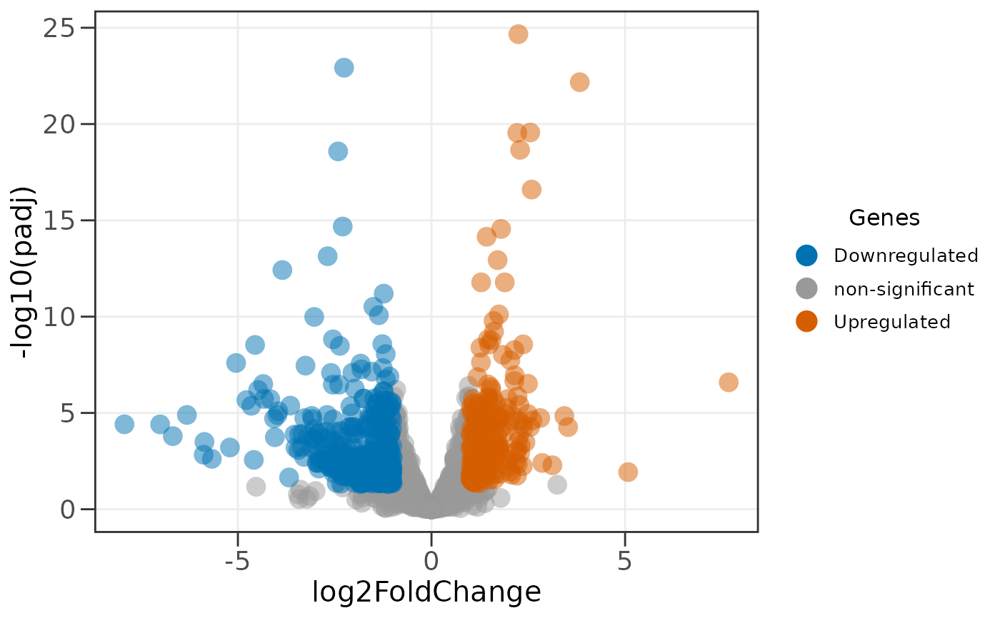
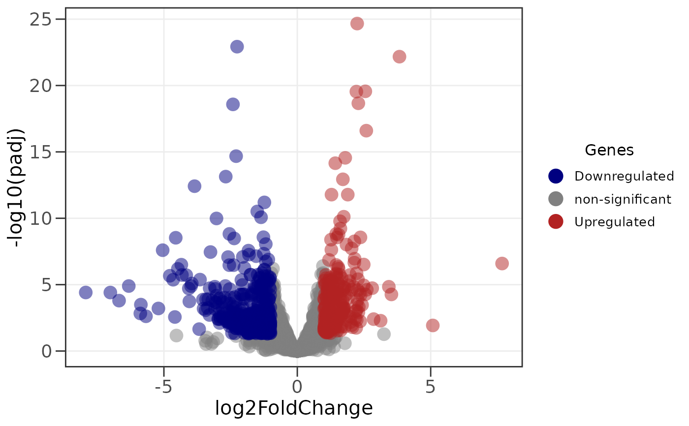

Lists the color presets available through the palette argument of
ggvolc and genes_table. Each preset sets the
color of downregulated, non-significant, and upregulated genes.
Value
A data frame with one row per preset and columns palette,
down, not_sig, up, colorblind_safe, and
source.
Details
Presets marked colorblind_safe keep the up and down colors clearly
apart under simulated deuteranopia, protanopia, and tritanopia (checked
with colorspace). Several presets come from the
ltc palettes; ltc does not need to be
installed to use them.
You are not limited to these presets: palette also accepts a named
color vector such as c(down = "navy", up = "firebrick"). That makes
any palette usable, for example one from ltc:
pal <- ltc::ltc("maya"); ggvolc(all_genes, palette = c(down = pal[1], up = pal[4])).
Examples
ggvolc_palettes()
#> palette down not_sig up colorblind_safe source
#> 1 default #00798c #808080 #d1495b FALSE ltc: minou
#> 2 okabe_ito #0072B2 #999999 #D55E00 TRUE Okabe & Ito (2008)
#> 3 rdbu #0571b0 #999999 #ca0020 TRUE ColorBrewer RdBu
#> 4 pantone23 #1F2C43 #B8B8B8 #FFB000 TRUE ltc: pantone23
#> 5 seafarer #013D5A #BDBDBD #E4A25B TRUE ltc: seafarer
#> 6 midnight #075056 #B0B0B0 #FF5B04 FALSE ltc: midnight
#> 7 maya #3d5a80 #A9A9A9 #ee6c4d FALSE ltc: maya
#> 8 trio1 #0E7175 #B0B0B0 #FD7901 FALSE ltc: trio1
ggvolc(all_genes, palette = "okabe_ito")

ggvolc(all_genes, palette = c(down = "navy", up = "firebrick"))
